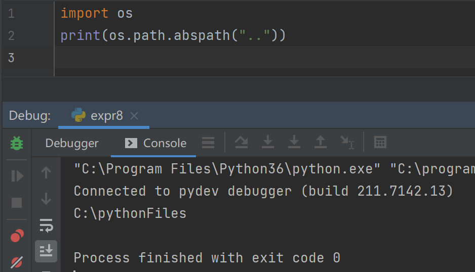
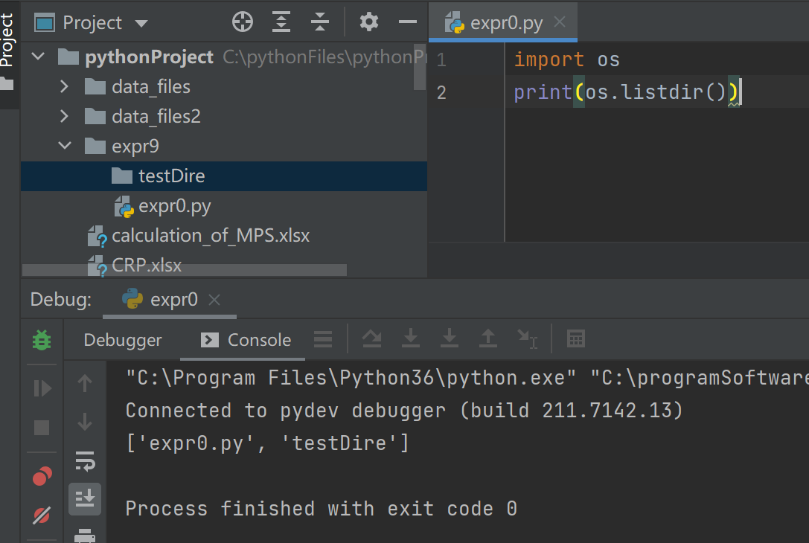
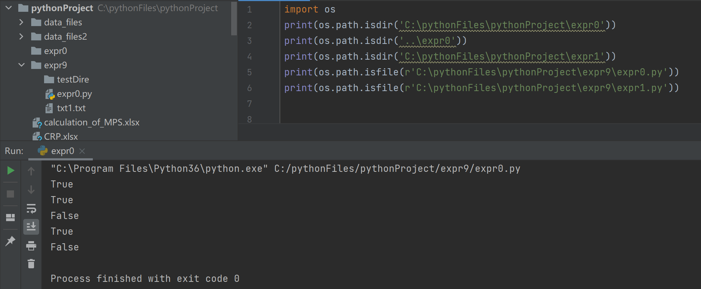
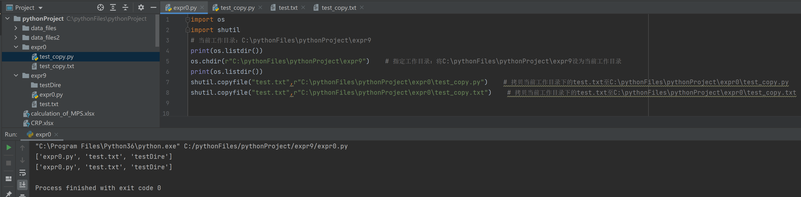
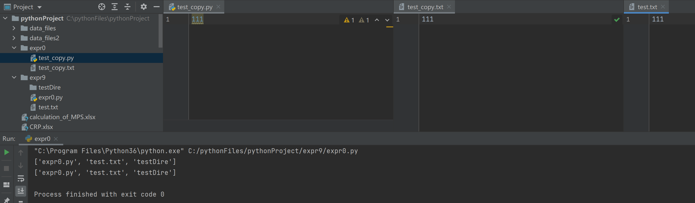
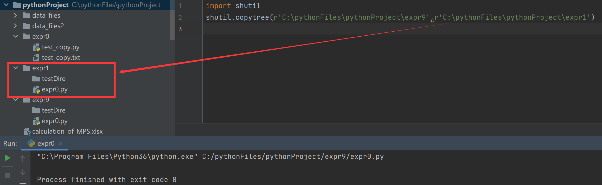

文件夹操作
1）获取目录信息
当前文件所处目录的绝对路径
1 | import os |
输出结果：

当前文件所处目录的上一级目录的绝对路径
1 | import os |
输出结果：

将当前目录下所有内容放到列表中返回
1 | import os |
输出结果：

将指定目录下的所有内容放到列表中返回
1 | import os |
输出略
将指定目录下的指定后缀内容放到列表中返回
1 | import os |
输出结果：

2）创建目录
在绝对路径下创建一个目录
1 | import os |
这种方式创建目录时，可以创建多级目录，即如果pythonProject这个目录没有的话，也会创建出来，然后再在其中创建expr0目录。
3）判断目录/文件是否存在
os.path.isdir('')： 判断指定位置的目录是否存在，存在返回true。单引号中可以是绝对路径或相对路径。
os.path.isfile('')：判断指定位置的文件是否存在，存在则返回true。单引号中可以是绝对路径或相对路径。
1 | import os |
python中字符串前面加上字符r代表当前字符串不进行转义
输出结果：
4）shutil库 - 复制、移动目录/文件
1、os.chdir('')：指定某一目录为当前工作目录，若无该语句，工作目录默认为当前程序所在目录。
2、shutil.copyfile('','')：拷贝当前工作目录下的某一文件内容到指定目录下的指定文件中，拷贝时两个文件的后缀可以不同，若指定位置没有指定目录和文件，则会直接创建。第一个参数为当前工作目录下的拷贝源文件，例如test.txt；第二个参数为指定要拷贝到的文件路径及文件名，例如C:\pythonFiles\pythonProject\expr0\test_copy.txt，当然也可以是相对路径。
1 | import os |
python中单引号和双引号都用来表示字符串
python中字符串前面加上字符r代表当前字符串不进行转义
输出结果：


3、shutil.move('','')：将当前工作目录下的指定文件移动到某一目录或文件上，若为文件，则会覆盖掉原文件内容。第一个参数为当前工作目录下的拷贝源文件，例如test.txt；第二个参数为指定要拷贝到的目录路径或文件路径，例如C:\pythonFiles\pythonProject\expr0。
4、os.remove('')：删除指定文件。
5、shutil.copytree('','')：将指定路径下的目录、文件，复制到新目录中，需要注意的是，我们想要复制到的新目录必须是一个未存在的目录。参数前者是指定的想要复制的目录路径，后者是我们要复制到的新目录路径。
1 | import shutil |
输出结果：
